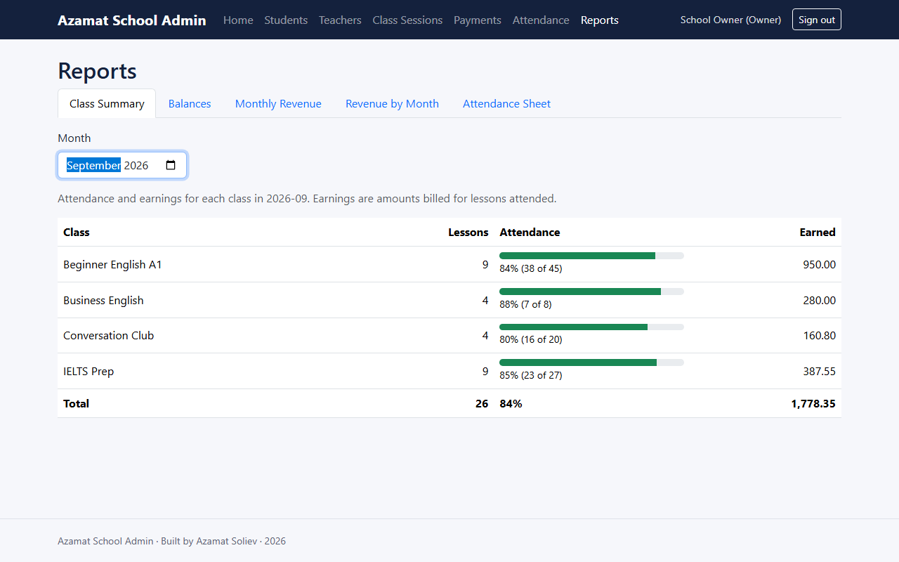
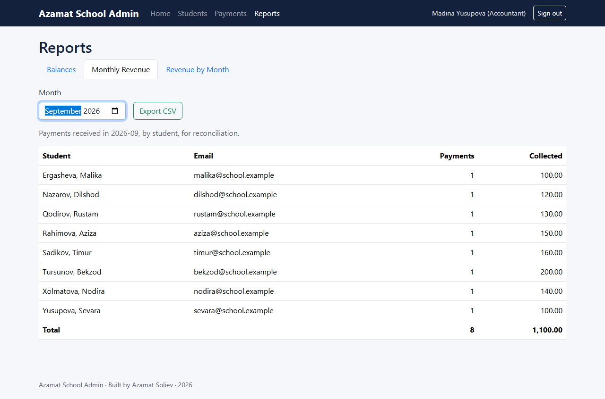
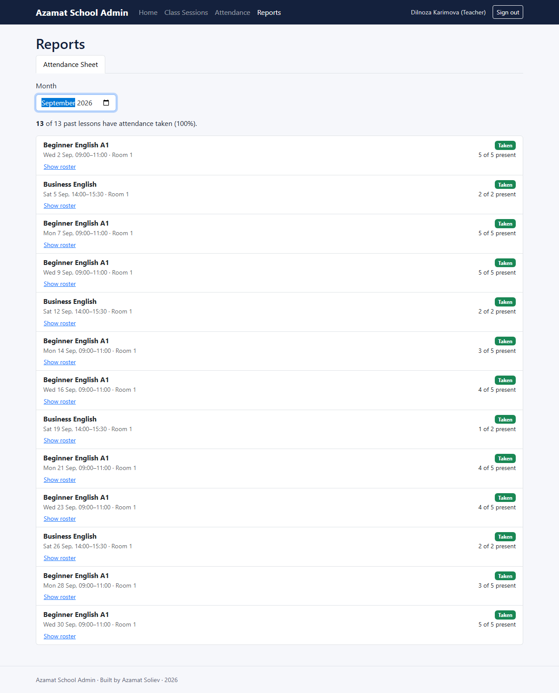
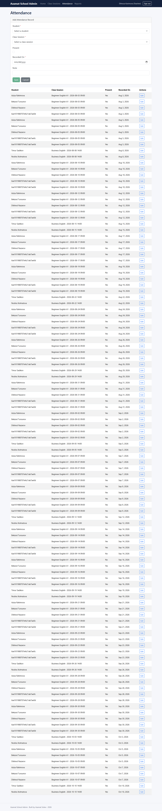

Enhancement Three: Databases
A school runs on decisions, not records. This enhancement adds five MongoDB aggregation pipelines that turn students, lessons, attendance and payments into the reports each role needs, with money exact to the cent and database security from request parsing to the fields a query returns.
- Category
- Databases
- Course outcomes
- Fully met: 1, 2 and 3. Also contributes to 4 and 5.
- Milestone
- Milestone Four, October 2026, with additions in the final release
- Code at this stage
enhancement-3-databases- Changes from Enhancement Two
- Compare on GitHub
- Narrative
- Word document PDF
What changed
- Five pipelines, a report for each decision. Outstanding balances and revenue by student, with a spreadsheet export, for the accountant; revenue by month; a class summary for the owner; and an attendance sheet for each teacher.
- Exact money. Every amount is converted to whole cents inside the database before it is summed, so a settled balance is exactly zero.
- Security at the database boundary. Requests carrying query operators are refused, query strings are parsed flatly, spreadsheet exports neutralize formulas, and the API can connect through a least-privilege database account.
- Names only for teachers. In the final release, a projection returns only students’ names to a teacher, enough to take attendance without seeing contact details.
- Verified inside MongoDB. The same pipelines run in the unit tests and against a real MongoDB server, in continuous integration on every change.
Evidence
Start from every student
Runs on the students collection.
Join attendance
Keep only records marked present that have not been withdrawn.
Join the lessons attended
Keep only lessons that were not canceled; each carries its own rate.
Join payments
Keep only payments that were not reversed.
Sum in whole cents
Billed and paid are converted to integer cents before adding, so the outstanding balance is exact.
Keep what the accountant needs
Every active student, plus any former student whose balance is not exactly zero, sorted by amount owed.
In floating point 10.05 + 16.85 = 26.900000000000002
In whole cents 1005 + 1685 = 2690
npm run verify:reports): the production pipelines run against the hand-calculated school, every figure is compared, and the index each query used is reported.







Narrative
Artifact description
The artifact is Travlr Getaways, a full-stack MEAN application I built as the final project for CS 465, Full Stack Development, in July and August of 2026. In Enhancements One and Two I extended it into the foundation of a management platform for a small language school, with students, teachers, class sessions, payments and attendance; its final release carries the name Azamat School Admin. This enhancement works on its data layer: the Mongoose schemas, their indexes, and the queries that turn stored records into information. In its original form that layer was flat. The application had two schemas with no relationship between them, indexes only on single fields (a trip’s code and name, and a user’s email), and no use of MongoDB’s aggregation framework; every query read a single collection and returned either every document or one document by key.
Justification for inclusion
I selected the data layer because a school does not run on records alone. The owner needs to know whether a class is worth continuing to run, the accountant needs to know who owes money and reconcile what was received, and a teacher needs to know which lessons still need attendance taken. None of those answers lives in any single collection. Each requires combining several, which is exactly what the databases category exists to demonstrate.
The enhancement adds five MongoDB aggregation pipelines, each a sequence of stages the database applies in order to filter, join, group and calculate, so that only the finished report crosses the network. The central one computes each student’s outstanding balance by joining students to their attendance, to the sessions attended, and to their payments, following the billing model agreed in Module One: a student is charged per lesson attended, at that lesson’s rate, minus what they have paid. A reports screen then presents each role with the reports that support its own decisions, and in a form suited to them: the owner sees attendance and earnings side by side for each class, the accountant sees balances and a line-by-line revenue table that exports to a spreadsheet, and a teacher sees only their own attendance sheet, with no financial figure anywhere on it.
The components that best demonstrate my database skills are the decisions inside those pipelines, because implementing the plan as written would have produced wrong reports. The plan’s balance pipeline counted every record. The platform deletes softly, keeping withdrawn records for their history, so a reversed payment, a canceled lesson and a withdrawn attendance record would all have been counted. Every pipeline now filters on the active flag. Money was the second problem. Rates and payments are stored as binary floating point, which cannot represent most decimal fractions exactly: the lesson rates 10.05 and 16.85 add to 26.900000000000002. Every amount is therefore converted to whole cents before anything is summed, and the schemas refuse any amount with more than two decimal places, so every total is exact. That exactness has a concrete consequence. A former student who paid precisely what they owed would otherwise have a balance a few quadrillionths away from zero rather than exactly zero, and would wrongly remain in the accountant’s report as still owing.
Three further decisions are equally specific. Payment dates and lesson times are stored differently, so each is grouped into months the way it was entered: a payment date is a calendar date stored as midnight UTC and is grouped in UTC, while a lesson time is grouped in local time. Grouping payments in local time would move a payment made on the first of a month into the previous month for any school west of Greenwich. Second, a whole-school monthly report had no usable index, because the compound index built for conflict detection leads with the teacher, and a compound index can only be used from its leading field. I added an index on the active flag and start time, so the report seeks straight to the month instead of scanning every lesson the school has ever run. Third, Mongoose stores the attendance model in a collection named attendances, and a MongoDB lookup that names a collection that does not exist returns nothing without raising any error. Every pipeline reads its collection names from the models.
The enhancement also hardens the security of the database. Any object with a key beginning with a dollar sign is a MongoDB query operator, so a request containing "teacherId": {"$ne": null} would have turned a check for a specific teacher into a search that matches any teacher. Request bodies containing operators are now refused before any query runs, query strings are parsed flatly so that one cannot carry an operator either, and every report parameter must be an exact string. A teacher’s attendance sheet always uses the identity from their signed token and ignores any teacher named in the request. Teachers may also record attendance only for their own lessons; because students are billed per lesson attended, a teacher able to mark a student present at a colleague’s lesson could have added a charge to that student’s balance, and nothing previously prevented it. The spreadsheet export neutralizes any name beginning with a formula character, so a student entered as =HYPERLINK(…) cannot become a live formula on the accountant’s computer. Report responses are marked not to be cached. The application can now connect to a database that requires a password, using a least-privilege account restricted to its own database, and the password is hidden whenever the connection string is logged.
The final release added one more control at the database level. Teachers could not record attendance from the interface, because the student list was refused to them, which left the attendance form’s choice of student empty. Granting teachers the full student list would have exposed contact details they do not need. Instead, each entity can now declare a projection per role, and MongoDB returns only first and last names to a teacher: the minimum needed to mark attendance, with email addresses and telephone numbers never leaving the database. The rule matches the exact role rather than an inherited one, so the owner, whose role includes every teacher permission, still receives complete records.
These pipelines were verified on a real MongoDB server as well as in the tests. Run against a temporary database on a MongoDB server on my own computer, loaded with a small school whose every figure I had calculated by hand, the verification passed all 14 of its checks: every report’s figures matched, and MongoDB chose the intended index for the class summary and for the attendance sheet. The same verification passed again in continuous integration for the final release.
The specific skills this enhancement demonstrates are MongoDB aggregation pipeline design with joins, grouping and date handling, index design for reporting queries, exact money arithmetic in whole cents, data modeling with references, defenses against query-operator and spreadsheet-formula injection, least privilege through projections and a restricted database account, and testing database code both in memory and on a real MongoDB server.
Course outcomes
I planned to meet outcomes one, two and three with this enhancement, and I met all three. Outcome one is met because each report answers a decision a specific role in the school has to make, using figures drawn from recorded activity rather than estimates. Outcome two is met because the same underlying data is presented differently for each reader: a comparison for the owner, a reconcilable table and export for the accountant, and a checklist for the teacher. A single generic table would have been technically correct and practically useless to at least two of them. Outcome three is met through trade-offs I can state precisely. Attendance and payments reference students and sessions rather than embedding them, which is what allows the pipelines to join them at all. Each index is added only where a real query needs it, because every index slows every write. Money is converted to cents at calculation time rather than migrating stored values to a decimal type, which gives exact results without a data migration. And rates are read live because each session is a single dated lesson, so editing a past rate is a correction; if sessions were generated from a shared course template, each rate would need to be copied onto the attendance record instead, so that a price change could not rewrite past charges.
I have one update to my coverage plan. This enhancement also demonstrates outcomes four and five, through the testing approach and the database security work described above. With this enhancement complete, all five course outcomes are demonstrated across the three enhancements:
| Course outcome | Where it is demonstrated |
|---|---|
| 1. Collaborative environments supporting decision making | Enhancement One: owner, accountant and teacher roles with purpose-built access. Enhancement Three: reports built around each role’s own decision. |
| 2. Professional communication adapted to audience | Enhancement Three: a different report format for each reader. Code review, plan, narratives and this portfolio. |
| 3. Algorithmic principles and design trade-offs | Enhancement Two: O(n) against O(log n + k), with k proven at most 32. Enhancement Three: index, money and data-model trade-offs. |
| 4. Well-founded and innovative techniques | Enhancement One: generic controller factory. Enhancement Two: bounded index search, keyed mutex. Enhancement Three: aggregation pipelines executed in tests and verified in MongoDB. |
| 5. Security mindset | Enhancement One: role and ownership scoping, stored XSS fixed. Enhancement Two: booking race closed. Enhancement Three: injection defenses, least-privilege access, names-only projection. |
In summary, this enhancement fully meets outcomes one, two and three, and contributes to outcomes four and five, which are fully met across the three enhancements together. No outcome is left unmet.
Reflection on the process
The most important thing I learned is that a test which passes has not proven anything until it has been shown to fail. My report tests run the real production pipelines against a small school whose every figure I calculated by hand. They passed on the first run, so I deliberately broke the pipelines to confirm the tests would notice. Counting reversed payments was caught immediately. Removing the rounding step from the money arithmetic was not caught at all, because the lesson rates I had chosen happened to convert to whole cents exactly, so the missing step made no difference to them. The test suite was passing while unable to detect the very defect it was written to prevent. I searched for realistic prices that expose both ways floating point fails, changed the fixture, recalculated every expected figure, and confirmed that each kind of defect now fails the tests. I now treat demonstrating that a test can fail as part of writing it.
The main challenge was verifying database code without depending on a single environment. Aggregation pipelines run inside MongoDB, so I kept the pipeline definitions free of any database connection and ran the identical objects in an in-memory implementation of MongoDB’s aggregation language during testing. That alone was not sufficient, because an in-memory engine is not MongoDB, so I also wrote a verification tool that loads the same hand-calculated school into a temporary database on a real MongoDB server, runs the real pipelines, checks every figure, and reports which index each query used. The two together test the logic everywhere and the real engine where it runs. In the final release, continuous integration runs that verification on a fresh MongoDB server on every change.
Another lesson came from returning to my own earlier work. While checking how the new reports would be routed, I found that a change I made in Enhancement One had broken the public trip listing for visitors who were not signed in, and with it the public travel page. The entity router applied its sign-in check to every request passing through it, including ones it did not own, and it had gone unnoticed because the page still worked for anyone who was signed in to the administrative screen. I corrected it and added a regression test, which the final release kept, pointed at the routes that remain public. The experience reinforced something this capstone keeps teaching: the defects that survive are the ones that fail silently, whether a lookup against a misnamed collection, a balance that is almost zero, or a page that only breaks for the users you are not.
Incorporating feedback
The instructor feedback on this milestone confirmed that each rubric criterion was met and requested no changes. The improvements in this enhancement came from three kinds of review. Comparing the approved plan against the data as actually stored exposed the gaps described above, from counting reversed payments to the misnamed collection. Deliberately breaking the code exposed the test that could not fail. And tracing real tasks through the system, step by step as a teacher would perform them, exposed both the attendance ownership flaw and, in the final release, the empty student list that stopped teachers from recording attendance at all. Each finding was corrected with a test, so the review is repeated automatically whenever the code changes.